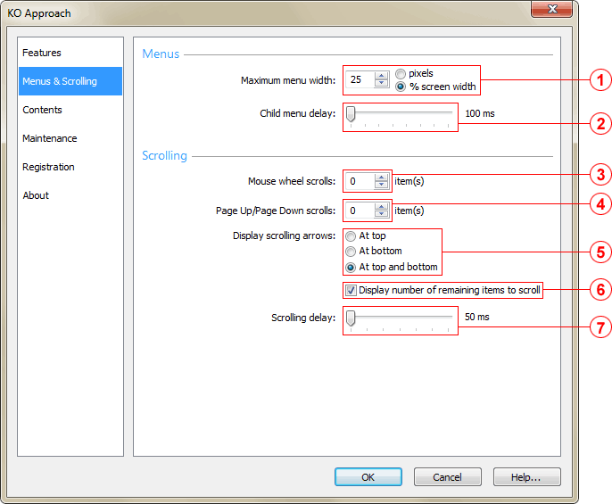

Maximum menu width group
Specifies the maximum menu width. This value can be either measured in pixels or set to a percentage of the screen width. You can set the measurement by checking one of the two radio-buttons. The maximum width may not exceed 1/3 of the entire screen width.
Adjusts the amount of time KO Approach will wait before displaying sub-menus (a.k.a child menus) The acceptable range is 100 to 800 milliseconds, the value incremented by 100 milliseconds.
Mouse wheel scrolls spin control
Specifies the number of items to be skipped when scrolling menus with the mouse wheel. The acceptable range is 2 to 20 items.
Page Up/Page Down scrolls spin control
Specifies the number of items to be skipped when scrolling menus by pressing the Page Up and Page Down buttons. The acceptable range is 3 to 30 items.
Display scrolling arrows group
Specifies the way scrolling arrows are displayed. Possible values are:
Display number of remaining items to scroll checkbox
When this item is checked, scrolling arrows display a counter of items not currently visible in the menu. This counter changes as you scroll at either direction.
Adjusts the amount of time KO Approach will wait before displaying the next upper/lower item on a menu when one of the scrolling arrows is highlighted. The acceptable range is 75 to 200 milliseconds, the value incremented by 25 milliseconds.
Note: Scrolling will occur only when a menu does not fit within the height of the screen.